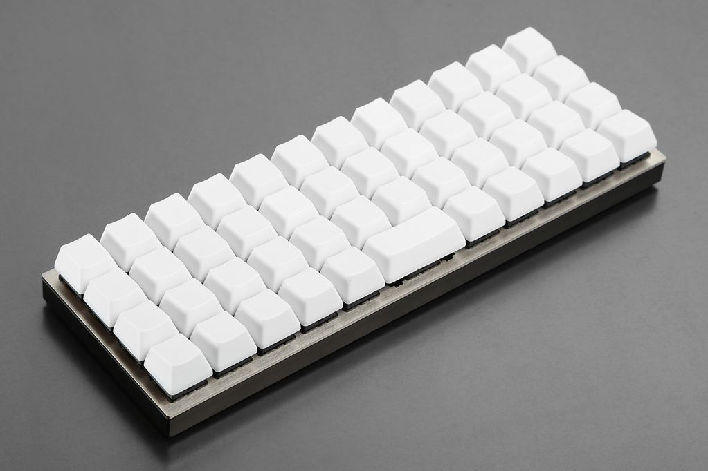

After years of using a Happy Hacking Keyboard Lite, I have finally decided to splurge on a Happy Hacking Professional 2 keyboard. And I love it.
Note: I have been slowly chipping away at this post for the last few months. I have been very busy, but I should be able to get back into the swing of writing again.
My history with the HHKB Lite
{kind=link}
I started using Linux during my senior year of high school. In college, I started diving deeper down the rabbit hole, learning more about shells, window managers, and programming. By senior year, I found myself sitting in front of an Arch Linux install, configured with a tiling window manger to organize the scattering of VIM and VIM-like terminal applications I used every day. To be kind to my wrists, I wanted something that was optimized at the hardware level for my heavy CTRL key use. This is when I first learned about the HHKB. However, as a broke college student, I opted for the much cheaper lite version to test out. I enjoyed the layout so much, that years later when I needed to replace a keyboard at work, I had them order me a HHKB lite (again, the Pro was very expensive).
Time for a Mechanical Keyboard
After years of using the standard rubber dome HHKB lite, I wanted to finally switch to a true mechanical keyboard. I searched long and hard, looking at different layouts designs, and learning about the various switch types (mostly the commony cherry MX switches). After purchasing and playing with a switch tester, I confirmed that I would likely enjoy MX clear switches best. They are quiet enough I could still reasonably use them in an office, but still had the nice tactile bump that I love (more than what I experienced on the Browns). Additionally, I knew that I wanted to stick with a small, minimalist layout, so I exclusively looked at 60% keyboards, with the occasional 40% board catching my eye.
{kind=link}
Like many, I eventually landed at the Vortex Pok3r. It is beautiful, with a minimal, but sturdy appearance, and has a MX clear variant. I had made my decision, but at the time, new boards weren’t available. I decided to sit back and wait to see if it would drop on Massdrop any time soon. I had waited years to purchase a mechanical keyboard, and I could wait a little longer to get the one I wanted.
The Planck Drop

While I was waiting for a Pok3r drop… something interesting caught my eye on Massdrop… the Planck keyboard… The planck is a keyboard kit that you solder together to create a programmable, ortholinear, 40% keyboard. When I say programmable, I don’t mean that you can just bind some keys. The Planck is fully open and the firmware C code is available on Github for modification. So, you can actually customize and hack together the firmware, which was very appealing to me. So I joined the drop.
After joining, I purchased a soldering kit so that I could construct the keyboard once it finally shipped. Unfortunately, the planck drop had several delays, but as I previously stated, I didn’t waiting. The planck got delayed so much, that they eventually allowed people to cancel their order and receive a refund. I thought the order cancellation was something you opted in to do, but it was actually an opt out situation… so my lack of response had my order canceled, pre-maturely ending my planck experience.
Deciding on the HHKB Pro
With my planck order canceled, and a refund imminent, I started to look at other options again. The main contender was still the Pok3r. I started researching it again and learning about how I could program the layers to have a layout I would like… and eventually realized I just kept re-creating the infamous HHKB layout.
So I started to consider the HHKB again. My main reasons for not getting it originally was that it is a good bit more expensive than the majority of mechanical keyboards on the market. However, after waiting months for the planck, and noticing I kept comparing everything to the HHKB, I realized I would eventually end up with an HHKB anyway, and decided to just go for it now. Decision made.
Getting the HHKB
{kind=link}
Once I decided on the HHKB, (and it was approved by my wife :P ), I purchased it on Amazon. The one thing I did contemplate about was which color to get. I didn’t know if I wanted to get the black or white model. I knew I wanted printed key-caps, and that made the white board very appealing. The printed keys on it look so crisp. Eventually, I decided on the dark gray because it matches everything else I own, whereas the white board would drastically stick out.
I placed the order and within a few days, it was on my doorstep (well, the neighbor’s, but that’s an issue with our post…).
What I like
Layout
As already mentioned, I love they HHKB layout. It was a bit tricky to get accustomed to at first, but that was several years ago at this point. The HKKB Pro does have a few difference in layout when compared to the lite version (the pro does not have a bottom left fn key, or any dedicated arrow keys). However, I had prepared myself for this change over the last few years by only using the right fn key and the fn arrow keys. The hardest thing to adjust to was the slightly different sized alt and super keys on the left (due to the missing fn key).
I have learned to appreciate all the little HHKB layout differences. This includes the “delete” by default backspace key, with the ~ key above it, and the ESC key next to 1. Last but not least, the CTRL in the CAPS location (with CAPs still available as fn + Tab). I honestly think this should be the standard keyboard layout.
PBT key-caps
I didn’t expect the PBT key-caps to be such a big deal, but I absolutely love them. I could tell from images that they would look better (especially the white ones), but I didn’t anticipate how great they would feel. They are solid, but with a soft touch, and are a much better improvement over every keyboard I have previously owned/used.
The Switches
I wasn’t sure how I would like the topre switches after getting excited for Cherry MX clears. However, I seem to really like them… at least on the HHKB. I have heard that they feel different on the HHKB compared to other Topre keyboards due to the HHKBs plastic back. I’m not sure if this is true or not, but I like the result. Key presses are smooth but at the same time very crisp. Being a heavy typist, I often bottom out, but when I do it feels very soft, and not harsh at all. I figure that if I am going to bottom out on my keys regardless of what keyboard I have, it is probably best to handle it how the HHKB does.
… Can I say sound?
I love the sound of typing on this keyboard. While it is definitely an audible keyboard, it isn’t nearly as obnoxious as louder clicky switches, like MX Blues or Greens. It has a soft, muted, lower pitched sound as I type (compared to normal “clicky” switches). I really do enjoy hearing it, and find myself sometimes taking off my headphones to listen to it if I need motivation to get more characters on the screen.
What I don’t like
Cost
As I’ve mentioned earlier in the post, probably the biggest downside to the HHKB is the substantial cost. At >$230 USD, it is expensive, even for mechanical keyboards. The cost is the single problem that kept me from buying it all these years. Eventually, I realized it is what I wanted, and it would likely last me years, so it all works out. Additionally, if I didn’t like the PRO, or didn’t want it anymore, they do have an incredible resale value, so I could likely get a large chunk of my money back fairly easily.
Transporting it (related to cost)
While the cost issue is mitigated after just biting the bullet and hitting the “check out” button, there is another minor annoyance that is related to the high price. Ideally, I’d like to use my HKKB whenever I am at the computer. Being a software developer… I use a computer for 8+ hours a day at work. So, I like to use my keyboard at work… but I also like to bring it home. Ideally, I’d get two: one for home and one for at the office. At the high price point though… I might have to wait to make that purchase. As far as keyboards go, I’d say the HHKB is probably one of the best travel boards out there. It’s light, but sturdy, and there is even a travel case designed specifically for it. So far I’ve been using the box to transport it, but am going to get the traveling case soon. That should hold me over until it is justifiable to get a second board. One day…
I actually was just gifted the carrying case for Christmas. I will check out how it works in the new year. It should at the very least be better than the cardboard box it came in…
“Mac” mode / Delete “fix”
One benefit of getting the HHKB Pro over the lite version, is that it has some media key functionality (volume, start/stop). However, these keys only work when the dip switches are configured to put the board in “Mac mode”. In addition to enabling the media keys, it changes a few other things, like changing the iconic HHKB “Delete” key to a more traditional “Backspace” default. Now, I understand that 99% of people probably welcome this change with open arms. However… after using the HHKB lite for so many years, I have really become accustomed to the “delete” key there, and actually prefer it now. With how I jump around my editor/terminals with emacs bindings, I have actually developed a workflow where I use delete more often than backspace.
I cannot figure out a way to have both the mac mode and “delete key default” functionality enabled at the same time. So… I have opted to just forgo the new media keys, which is unfortunate. It’s a nice upgrade from the lite version, and a shame I can’t take advantage of it just because I prefer the default layout of the keyboard.
Missing more “Modern” Features/Perks
The HHKB being a “classic”, seems to be lacking in some of the more “modern” features of high-end keyboards. There is no backlighting, no custom programming/macro setups, or wireless connectivity. I even believe that the two USB ports on the back are USB 2, not 3 (let alone C). While it would be nice to have some of these features in the HHKB, I’m not hurting too badly for them… yet. A modern refresh would be amazing though.
Conclusion
All in all, it is a great keyboard and I plan to use it for a long time. Typing on it feels and sounds so natural, and it has the same layout I have grown to love over the last few years. I am thrilled to finally upgrade to the pro, and wish I did so years ago.
Website Switched to Hugo